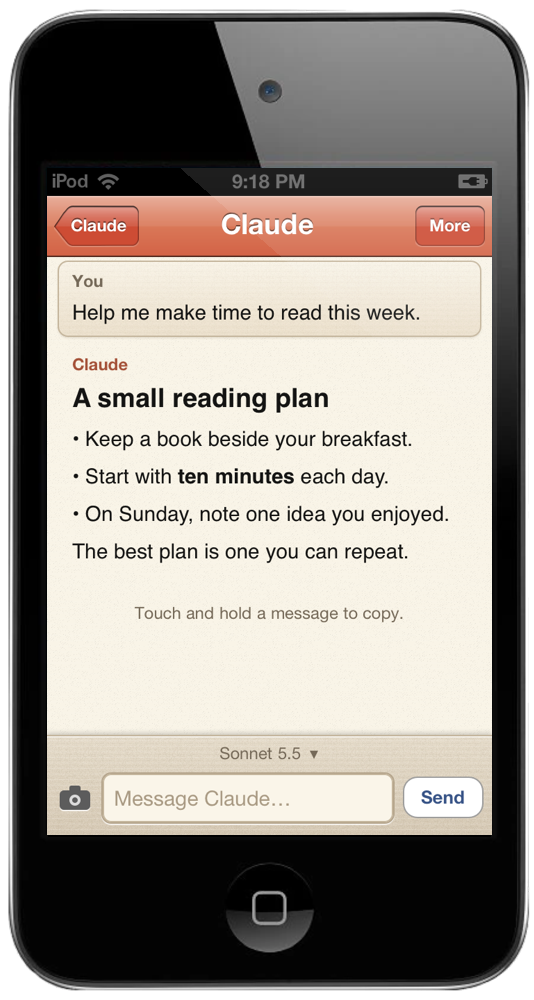

A new mind. An old friend.
Claude, imagined for the iPod touch you kept.

Stream replies, switch Claude models, search your chats, and keep earlier versions when you edit. Headings, lists, links and code belong on warm paper. Wide code and tables scroll inside their own little boxes.

Use the native camera or photo library. Bring a PDF in from Safari or Mail, then follow a citation to the right page. Web search includes sources you can open.
Dictation records a draft for review through an OpenAI-compatible transcription service. It uses a separate speech key.

Habits turns goals and real progress into small actions for the week. Sets uses recent training, equipment and time to suggest routines you review before saving.
Cards adds study coaching and help with difficult cards. All three apps can open a question and a progress summary in Claude. Read or edit the draft, then decide when to send. No automatic changes to your habits, workouts, routines or card reviews.
After the legacy HTTPS setup, Claude connects directly from the iPod. Your Mac can stay at home. Keys live in Settings. Chat history is stored on the device; sending a message shares its relevant context with Anthropic. API use is billed by the provider; this is separate from a Claude subscription.
Screens show illustrative demo data.